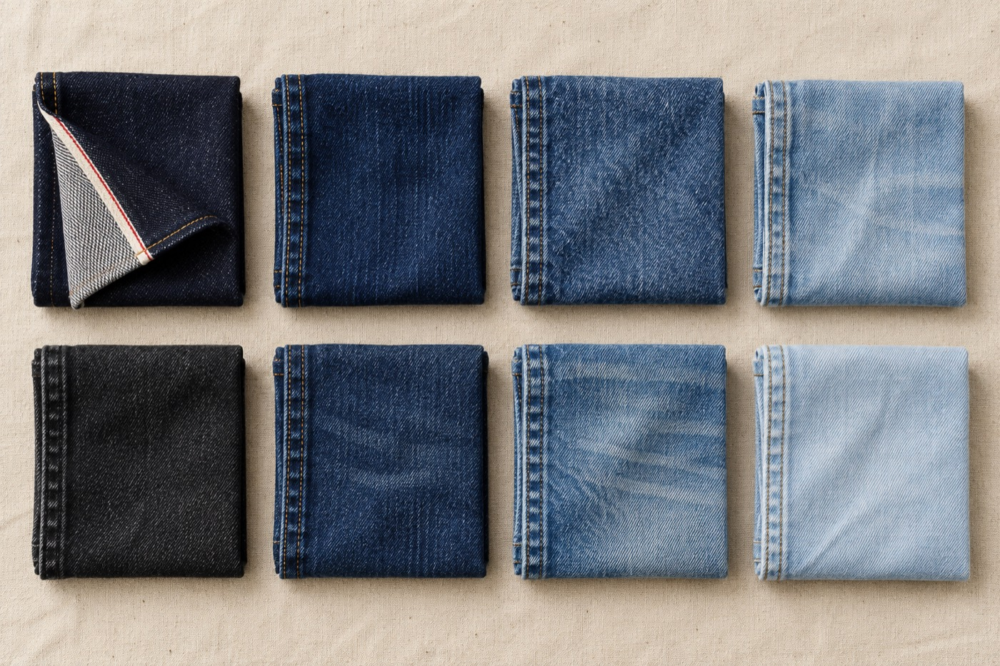
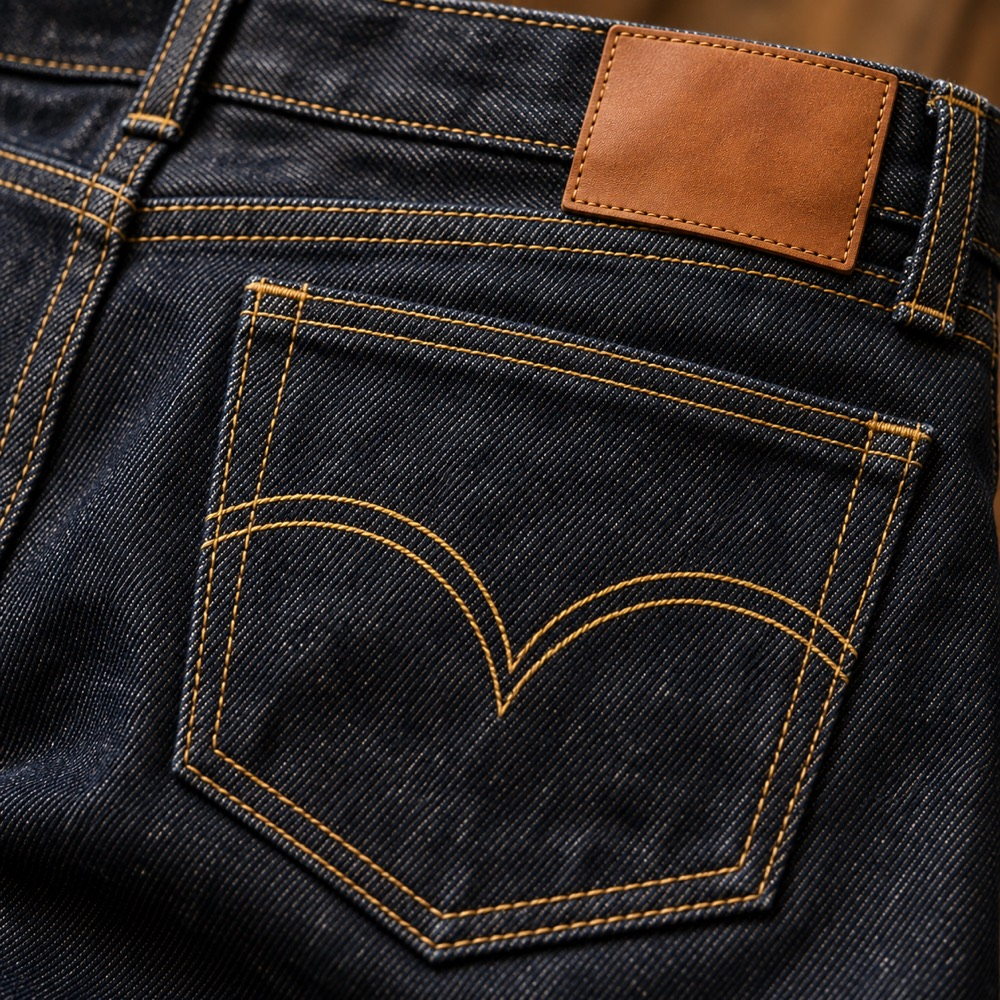

Jeans and denim bottoms
- Straight, baggy, carpenter and flare fits
- Selvedge and non-selvedge construction
- Custom back-pocket stitching and rivets
- Leather or jacron patches, your artwork
Streetwear-cut jeans, jackets and workwear from the town that makes a third of the world's denim. Low minimums, your own washes and trims, and a team that answers in English before your morning coffee.

Example figures. We swap in your real minimums, fabrics and lead times.
Cut, sew, wash and finish under one roof. Send a reference garment or a tech pack and we work from there.

| Weight | Construction | Good for |
|---|---|---|
| 16 oz | 100% cotton, right-hand twill, selvedge | Heavyweight raw jeans, jackets |
| 14 oz | 100% cotton, right-hand twill | Core five-pockets, workwear |
| 12 oz | 98% cotton, 2% elastane | Slim and relaxed fits with give |
| 10.5 oz | 100% cotton, lightweight | Shirts, summer bottoms |
| 13 oz | Sulfur-dyed black | Black jeans that fade grey, not brown |
Five steps from your first email to a pallet at your door. You approve the fit and the wash before anything goes to bulk.
Send a spec sheet, or mail us a garment you want to match.
Price per piece at your quantity, fabric and wash, with trims itemised.
One fit sample, then revisions until the fit is right.
Cut, sew, wash and finish. Photos from the line as we go.
Inline and final inspection, then sea or air, DDP to the US if you want it.

Most of our clients are small labels: a designer, a founder, sometimes a shop with its own line. They need 300 pieces, not 3,000, and they need someone on the other end who understands US sizing, US timelines and what "vintage wash" means in Los Angeles versus Guangzhou.
We grade to US size charts, quote in dollars, and reply within a working day.
Or just a photo of the jeans you wish you were making. You get a per-piece quote at your quantity within two working days.
Placeholder address. WeChat and WhatsApp lines go here too.